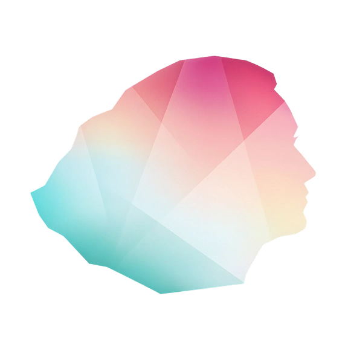
Larisa Malyכשכל דקה קובעת –
הסוכן מציע.
המנהלת מחליטה.
איך עיצבתי מחדש את תפעול הרשת – ממעקב לקבלת החלטות. לולאת השיבוץ: מכ-8 דקות בטבלאות לכ-4 היום - והסוכן מכוון להוריד את הזמן לחצי שוב.
נסו את הדמו החי (opens in a new tab)על SyncOps
מוצר SaaS בזמן אמת לתפעול רשת סיבים בחברת תקשורת גדולה – עלה לאוויר ובשימוש יומיומי. שכבת ה-Agent שמוצגת כאן עוצבה לפני הפיתוח.
מה עיצבתי
- מחקר
- ראיונות משתמשים
- פרסונות ומסעות משתמש
- אסטרטגיית UX
- עיצוב Agentic AI
- ווירפריימים ואבות-טיפוס
- מבחני שמישות
תוצאה – לולאת השיבוץ התקצרה מכ-8 לכ-4 דקות (הערכה עם התפעול).
היקף
ההיקף שלי: דשבורד המנהלת – ממחקר ועד UI. מסתנכרן בזמן אמת עם אפליקציית הטכנאים – מוצר נפרד.
תחת NDA – כל שם, מסך ונתון כאן נבנו מחדש מאפס. שום דבר אינו חומר של הלקוח.
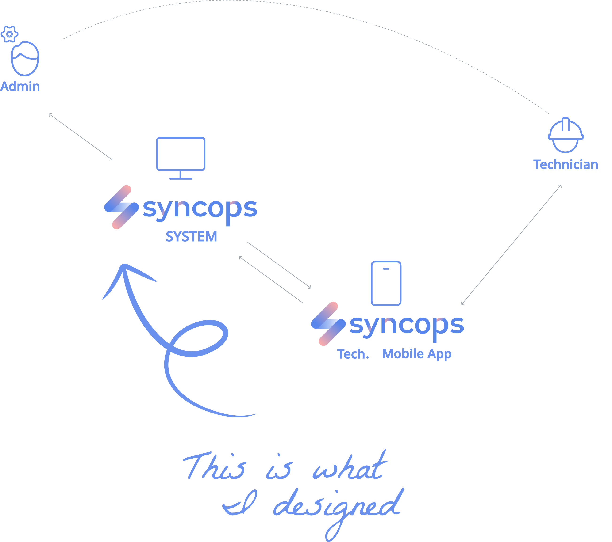
הבעיה לא הייתה נראוּת.
היא הייתה זמן עד החלטה.
כל שיבוץ עדיין שילב מיקום, כישורים, עומס, תנועה ומזג אוויר – בראש של האדמינים, תחת לחץ של עמידה ב-SLA.
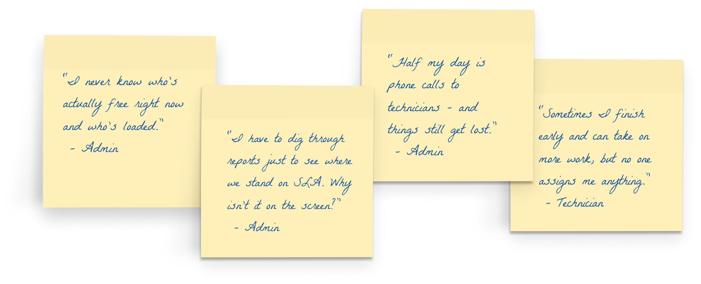
אני מבזבזת יותר מדי זמן על מציאת טכנאי פנוי! למה אין כלי שעושה את זה בשבילי?
– אדמין, מתוך ראיונות משתמשים
תקלות נשארות פתוחות שעות כי אף אחד לא שם לב שהן לא הוקצו.
– אדמין, מתוך ראיונות משתמשים
מעוגן במחקר
המקורי.
מעדיפים תפעול בזמן אמת מבוסס מפה
המנהלות ביקשו דרך מהירה יותר להגיב
לולאת שיבוץ במערכת הטבלאות דאז - מהתראה עד שליחת המשימה
מצביעים על פערי תקשורת בין מנהלות לטכנאים
מבקשים התראות תחזוקה חזויות
מחקר SyncOps המקורי – ראיונות עם 8 מנהלות ו-4 טכנאי שטח, תצפיות שטח, שיחות עם המנהלים שלהם. כלל גם בנצ׳מרק מול Praxedo, ServiceNow ו-Nagios, וסקירת ספרות.
תמר פרינסי אדמין
מתאמת צוות באזור המרכז בזמן אמת.
”אני מבזבזת יותר מדי זמן על מציאת טכנאי פנוי.”
אבי אורן טכנאי שטח
עשר שנים בסיבים אופטיים. מואט בגלל תדריכים לא ברורים; נתקע בפקקים בדרך בין אתרים.
”יש לי כמה משימות פתוחות, בלי סדר עדיפויות ברור.”
המשתמשים ביקשו סוכן –
עוד לפני שהמילה הייתה קיימת.
למה אין כלי שעושה את זה בשבילי?
– אדמיןאף אחד לא שם לב שהן לא הוקצו.
– אדמיןעדיף לי עבודה מונעת מאשר לחטוף תקלה גדולה - וגם פחות עומס על האנשים.
– מנהל אזורשלוש דרכים
להוסיף אינטליגנציה.
אוטומציה מלאה
הסוכן מקצה בשקט.
נפסל – האמון מת בטעות הנסתרת הראשונה.
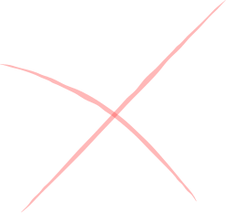
התראות חכמות יותר
יותר התראות, ממוינות טוב יותר.
נפסל – ההתראה מודיעה, אבל ההחלטה נשארת ידנית.
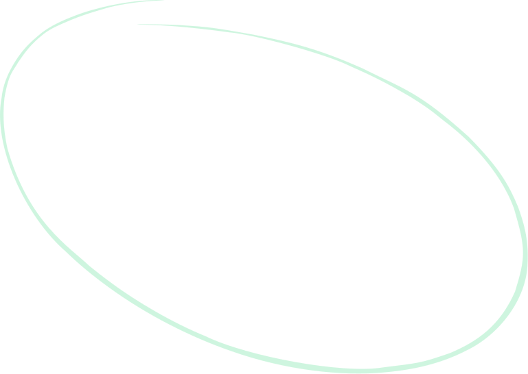
אוטונומיה מדורגת
הסוכן פועל היכן שבטוח, מציע היכן שהסיכון גבוה – ותמיד מסביר את השיקולים.
נבחר
פותר את הבעיה האמיתית – זמן עד החלטה – בלי לוותר על שליטה אנושית. מפחית עומס מהמפעילה ובונה אמון במערכת לאורך זמן.
שישה אותות,
החלטה אחת.
הסוכן ממזג ברציפות נתונים תפעוליים להצעה אחת ישימה.
קלט
- GPS חי ועומס עבודה
- כישורים ושעות משמרת
- שעוני SLA והיסטוריית תקלות
- חוקי מנהלת ומגבלות אזור
- תנועה ו-ETA API ציבורי · חיצוני, לא רגיש
- מזג אוויר API ציבורי · חיצוני, לא רגיש
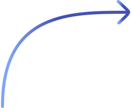
השיבוץ
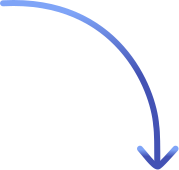
פלט
- הצעה מובילה אחת
- ציון ביטחון - רק כשלא בטוח
- נימוק בשפה פשוטה
הסוכן ממזג נתונים תפעוליים פנימיים עם API ציבוריים של תנועה ומזג אוויר – בלי חשיפת מידע חדשה, ושום נתון קנייני לא יוצא מהפלטפורמה.
איפה זה עומד
ב-2026.
סוכן מציע, אדם מאשר – Salesforce, זמינות כללית ממאי 2025. הערכות ETA מבוססות תנועה – Salesforce, Oracle, Microsoft.
ציון ביטחון גלוי עם סף - הסוכן אומר כמה הוא בטוח, ומתחת לסף הוא לא מציע - עוצר ומחזיר את ההחלטה לאדמין.
השוואה בקליק - ליד כל הצעה אפשר לראות מי היה המועמד השני ולמה הראשון ניצח - ואפשר להחליף.
התראות כיסוי - הסוכן מסתכל קדימה על המשמרות ומתריע כשאזור עומד להישאר בלי מספיק טכנאים - כולל הצעת פתרון.
תקציר יומי - פתיחת בוקר אחת מסודרת: מה קרה, מה הסוכן עשה לבד, ומה מחכה להחלטה - במקום 60 כרטיסים.
תכנון מחדש לפי תנועה ומזג אוויר - פקקים או סערה הם לא רק עדכון ETA - הם סיבה שהסוכן יציע שיבוץ אחר.
הערות גרסה ותיעוד מוצר של הספקים, 2025 – אומת באוגוסט 2026.
Salesforce, Oracle ו-Microsoft מספקות חלקים מהרשימה. את כולה - עדיין אף אחת.
איך הסוכן
מגיע להצעה
איסוף
כל 6 האותות, ברציפות
סינון
אילוצים קשיחים: כישורים, אזור, שעות משמרת, בטיחות
דירוג
זמן נסיעה, איזון עומסים, סיכון SLA
ניקוד
ציון ביטחון לפי טריות הנתונים והמרווח
החלטה
מעל הסף – הוא מציע. מתחתיו – הסוכן עוצר ושואל.
מחמישה צעדים ידניים
להחלטה אחת!
לפני – הלופ הידני
- לזהות את התקלה
- לסרוק את טבלת הטכנאים
- לבדוק זמינות
- לשקלל כישורים ומרחק
- להקצות ולעדכן
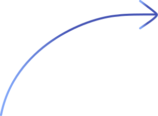
אחרי – עם סוכן השיבוץ
- סוקרת את ההצעה ואת הנימוק
- מאשרת. קליק אחד.
מה הסוכן עושה
אוטומטית ←
המפה היא
הקנבס של הסוכן.
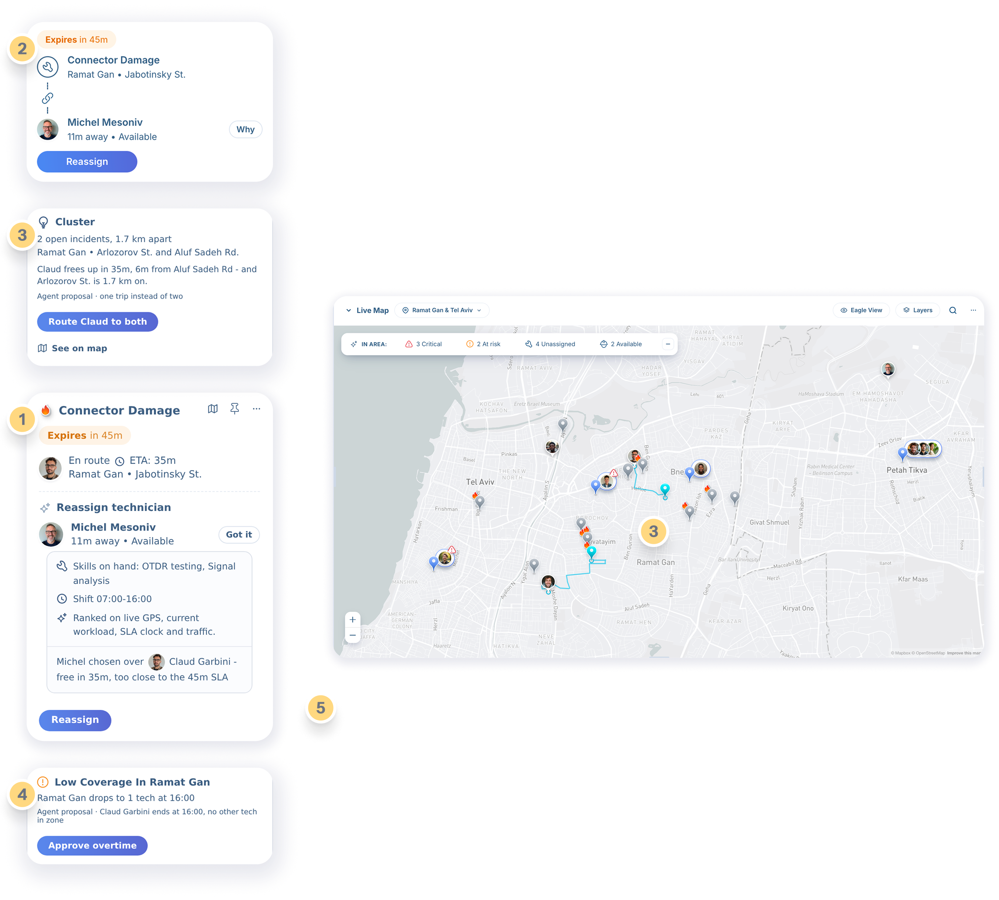
למה המפה מובילה: החלטות מרחביות הכי מהירות לקבל ויזואלית – התור והסגל עונים על מה שהמפה לא.
מה שהאדמין החזיק בראש – הסוכן מציג עכשיו על המפה: הצעות, סיכונים וריכוזי תקלות, במקום עצמו.
הצעת שיבוץ
”11 דקות משם, עם הכישורים הנדרשים” – הבחירה של הסוכן, קליק אחד לאישור.
שומר ה-SLA
”פג בעוד 45 דקות” – מסומן לפני שהשעון נגמר, לא אחרי.
זיהוי ריכוזי תקלות
”2 תקלות פתוחות, 1.7 ק״מ ביניהן” – הסוכן מזהה דפוס שאדם היה מפספס.
התראת כיסוי
”רמת גן יורדת לטכנאי אחד ב-16:00” – פער שצף לפני שהוא הופך לבעיה.
בדיקה מונעת
”3 תקלות מחברים ב-30 יום” – הבדיקה נקבעת לפני הרביעית.
אנטומיה
של החלטה.
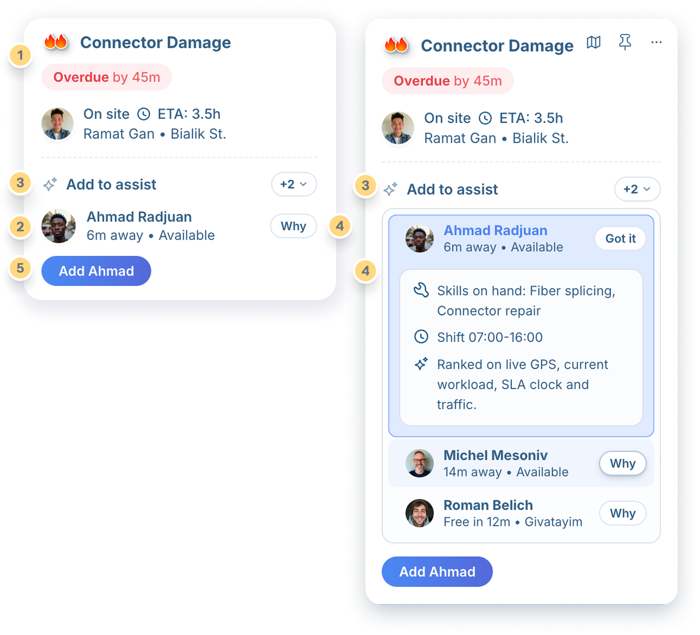
דחיפות
חומרה + שעון SLA קובעים את העדיפות והצבע של השורה
הקשר
הטכנאי הקרוב, עומס, מרחק – ממוזגים אוטומטית
ודאות
אין ציון בהחלטות בטוחות – מספר מופיע רק כשהסוכן לא בטוח
נימוק
”למה” אחד על האדם – כישורים, דירוג, והמועמד הבא בתור
הפעולה הבאה
כפתור ראשי אחד: שיבוץ. כל השאר משני
אוטונומיה,
בעיצוב מכוון.
סיכון והפיכוּת קובעים את הרמה. שום דבר לא פועל בשקט.
פועל לבד
- מיון ותעדוף התור
- סנכרון סטטוס וסגירה
- תקצירי אירועים
סיכון נמוך, הפיך, תמיד מתועד.
מציע
- שיבוץ טכנאי
- שיבוץ מחדש בסיכון SLA
- משימות מונעות
אישור בקליק אחד, נימוק מצורף.
אף פעם
- שליחה שקטה לשטח
- פעולה מתחת לסף הביטחון
הסוכן נסוג ושואל.
כשהסוכן
לא בטוח.
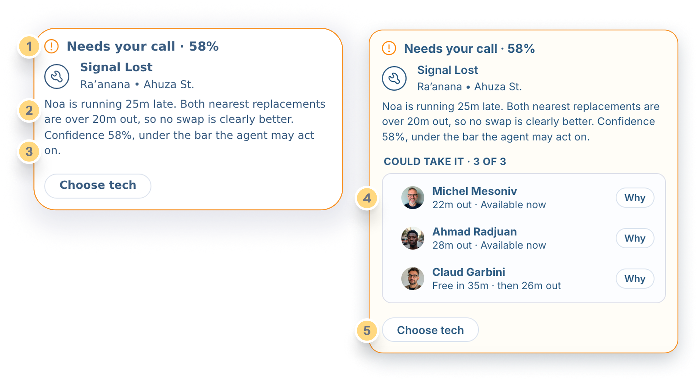
מוחזק, לא נדחף
מתחת לסף הסוכן לא מציע כלום – הוא מסמן ומחכה
למה הוא לא בטוח
שתי סיבות, בשפה פשוטה – אף פעם לא קופסה שחורה
58% – מתחת לסף
שיבוץ בסיכון גבוה נשאר מעל הסף. זה לא. הסף מכויל עם צוות התפעול – כל עקיפה מכיילת אותו מחדש
מסלולים, לא בחירה אחת
תמר משווה אפשרויות או מבקשת מהסוכן להעמיק
ההחלטה שלה
ההחלטה נשארת אנושית. הסוכן מתעד את התוצאה
Human-in-the-Loop,
בעיצוב מכוון.
ודאות
נימוק תמיד, ציון רק כשהוא לא בטוח
הסברתיות
”למה הטכנאי הזה” – בלחיצה אחת
שליטה
אישור · עריכה · עקיפה - בקליק אחד
ביטול
פעולות הסוכן הפיכות
שקיפות
יומן פעילות של כל צעד של הסוכן
Activity
- 12:41 · Tamar approved the proposal
- 12:41 · Briefed task sent to the field app
- 12:38 · Proposal created - Michel, 11m out
כל רשומה מציינת את המשימה שבה נגעה – נתיב ביקורת שהאדמין יכול לעמוד מאחוריו.
יום עם הסוכן –
תמר פרינסי
תקציר, לא רעש
סיכום בוקר אחד מתועדף מחליף קיר של התראות.
שומר ה-SLA תופס עיכוב
פקק מעכב טכנאי; הסוכן מציע שיבוץ מחדש לפני שה-SLA נשבר – תרחיש ישירות ממפת המסע המקורית.
קליק אחד. ההחלטה של תמר.
תמר מאשרת. המערכת מבצעת. הקרדיט נשאר אצל המנהלת.
הסוכן לא בטוח
Signal Lost על 58% – הסוכן מסמן ומחכה. תמר מחליטה.
ובצד של אבי
אבי ביקש פעם המלצות להפסקות בימים שקטים. הסוכן מציף את זה – כהצעה על הלוח של תמר. המשימה המאושרת נוחתת באפליקציית השטח שלו, מתודרכת ומלאה.
מריאקטיבי
למונע.
אזורי סיכון עולים על המפה – ריכוזי תקלות, תנועה ומזג אוויר מתקרב.
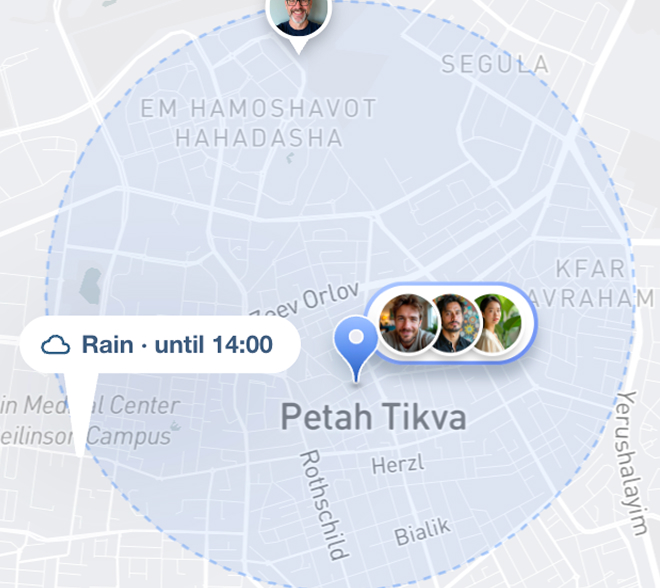
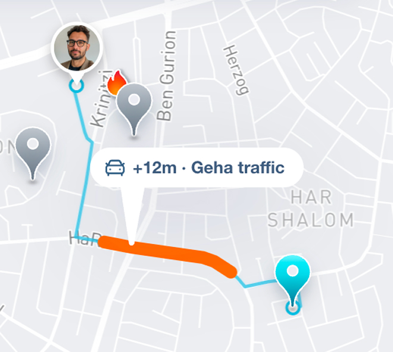
הסוכן מנסח משימות מונעות למקטעים בסיכון – לעולם לא מתוזמנות בשקט.
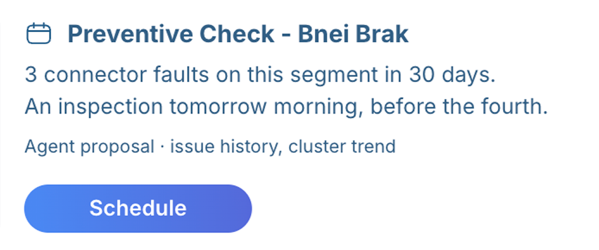
האדמין הופך הצעות לפקודות עבודה. מניעה הופכת לשגרה, לא למזל.
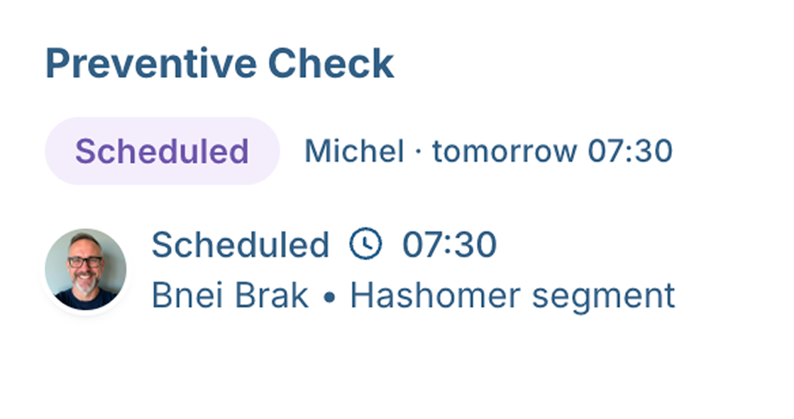
מתוך 12 המרואיינים ביקשו התראות חזויות – במחקר המקורי.
הערכה
עתידית
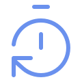
זמן עד שיבוץ
החלק של האדמין: מהתראה עד שליחת השיבוץ. צפוי להתקצר בכ-50% - מבסיס של כ-4 דקות בדשבורד הנוכחי.
חריגות SLA שנמנעו
כמעט-חריגות שנתפסו בזמן. צפויות לעלות - בשירותי שטח עמידה בזמנים עלתה מ-76% ל-91%.
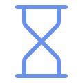
החלטות לשעה
התפוקה צפויה לגדול פי 2-3 - דיספצ׳ר ינהל 40+ טכנאים במקום 10-15.
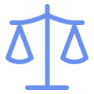
איזון עומסים
הפער בין עמוס לפנוי צפוי להצטמצם - 6-8 עבודות לטכנאי ביום במקום 3-5.
שיעור עקיפות ↓
עקיפות צפויות לרדת לכיוון 5-10% - הרף במערכות בשלות.
שכבת הסוכן עוצבה לפני שנכתבה שורת קוד - וביום שתעלה, סרגל המדידה כבר יחכה לה. הצפי של כ-50% נשען על בסיס של כ-4 דקות בדשבורד הנוכחי - אחרי שהמעבר מהטבלאות כבר קיצר מכ-8 (הערכה עם התפעול); שאר הצפי - על בנצ׳מרקים משירותי שטח סמוכים, לא מטלקום. חצייה של הלולאה של היום מחזירה בערך שעה ביום, בהערכה שמרנית. הכל הערכה, לא טענה.
מקורות: Upper - Auto Dispatch for Field Service · Baytech - Agentic AI Dispatch, 2025.
מה שעיצוב סוכן
לימד אותי
- לגרום לסוכן לצדוק היה חצי מהעבודה. לגרום לתמר לסמוך עליו – החצי השני.
- אם הייתי מתחילה מחדש, הייתי מעצבת קודם את מצבי הכשל.
- ההחלטות הקשות היו על מידע – מה להציג, ומה להשאיר במרחק לחיצה.
- קודם להציע – האוטונומיה מתרחבת ככל שהאמון גדל.
- הדבר הכי חשוב שהסוכן שלי אומר: אני לא בטוח.